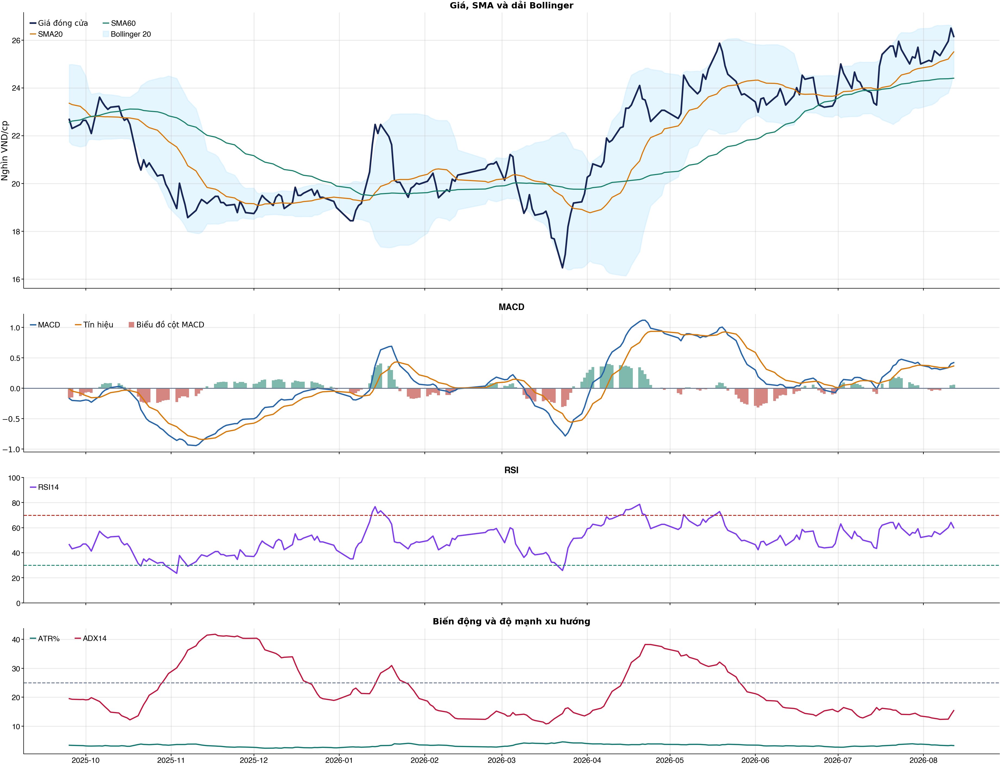

Kết quả chính
KPI đọc nhanh trước, chi tiết bấm mở bên dướiChi phí & vòng lệnh
Trọng tâm: tránh giao dịch nhiều làm phí ăn hết lợi thếBảng chính: turnover, gross, phí và net61 / 38 / 31 / 20 / 10 / 5 / 1
| Kịch bản | Cách chọn | Vòng | Gross trước phí | Phí | Net sau phí | Sharpe | Ghi chú |
|---|---|---|---|---|---|---|---|
| Gốc | Ngưỡng gốc ≥ 0.55 | 61 | +18.3% | 30.3% | -12.6% | -0.34 | Baseline 61 vòng nếu model phát tín hiệu nhiều. |
| Ngưỡng 0.58 | Chỉ vào lệnh khi xác suất ≥ 0.58 | 38 | +18.1% | 18.9% | -2.2% | -0.02 | Tăng ngưỡng để giảm vòng lệnh. |
| Ngưỡng 0.60 | Chỉ vào lệnh khi xác suất ≥ 0.60 | 31 | +16.6% | 15.4% | +0.0% | 0.05 | Tăng ngưỡng để giảm vòng lệnh. |
| Ngưỡng 0.62 | Chỉ vào lệnh khi xác suất ≥ 0.62 | 20 | +17.9% | 10.0% | +6.8% | 0.30 | Tăng ngưỡng để giảm vòng lệnh. |
| Giới hạn 10 vòng | Tối đa 10 vòng, ưu tiên xác suất cao hơn | 10 | +11.6% | 5.0% | +6.2% | 0.41 | Ngưỡng xác suất trong nhóm: 66.3%. |
| Giới hạn 5 vòng | Tối đa 5 vòng, ưu tiên xác suất cao hơn | 5 | +13.0% | 2.5% | +10.2% | 0.70 | Ngưỡng xác suất trong nhóm: 69.0%. |
| Giới hạn 1 vòng | Tối đa 1 vòng, ưu tiên xác suất cao hơn | 1 | +6.1% | 0.5% | +5.6% | 0.60 | Ngưỡng xác suất trong nhóm: 75.2%. |
Đọc bảng này từ trái sang phải: số vòng càng ít thì phí càng thấp, nhưng kết quả sau phí vẫn chỉ là kiểm thử OOS. Các dòng 10/5/1 giới hạn số vòng bằng xác suất model cao hơn, không phải chọn lệnh thắng sau khi biết kết quả và không tự biến NO_EDGE thành BUY.
Breakdown trước phí / sau phívì sao gross dương nhưng net âm
| Kịch bản trước chi phí | +18.3% | Gross PnL 18,289,135 VND; chưa trừ commission/slippage/tax. |
| Chi phí giao dịch | -30.3% | 61 vòng; entry 20.0 bps + exit 30.0 bps = 50.0 bps/vòng; tổng phí 28,355,115 VND. |
| Kịch bản sau chi phí | -12.6% | Net PnL -12,580,115 VND; gross - cost gap khoảng +30.9%. |
| Ngưỡng phí hòa vốn | 30.2 bps/vòng | Phí hiện tại 50.0 bps/vòng; cao hơn ngưỡng này thì gross dương vẫn có thể thành net âm. |
| Kết luận hành động | CHƯA CÓ LỢI THẾ (NO_EDGE) | Không mở vị thế mới; nếu đang giữ thì ưu tiên giảm/bán theo kỷ luật vì sau phí vẫn âm. |
| Cách cải thiện cần test | Giảm turnover | Hiện có 61 phiên active/61 vòng; nên test threshold 0.58/0.60/0.62 hoặc giữ nhiều phiên hơn. |
Kiểm thử chiến lược ngoài mẫu sau chi phí61 vòng
| Lợi nhuận ròng | -12.6% | 702 quan sát ngoài mẫu |
| Sharpe | -0.34 | Sau chi phí |
| Mức sụt giảm tối đa | -20.4% | 61 vòng giao dịch |
| Chi phí giả định | 50.0 bps | Một vòng mua và bán |
So sánh mô hìnhXGBoost vs Logistic
| XGBoost | 0.518 | AUC 0.558 |
| Logistic | 0.519 | AUC 0.563 |
| Đa số | 0.500 | Mốc so sánh |
Mức độ quan trọng của đặc trưngtop feature
| volatility_20d | 13.74 | Mức đóng góp |
| macd_pct | 12.47 | Mức đóng góp |
| return_1d | 11.38 | Mức đóng góp |
| corr_60d | 11.30 | Mức đóng góp |
| market_return_1d | 10.80 | Mức đóng góp |
| return_20d | 10.52 | Mức đóng góp |
| macd_hist_pct | 10.40 | Mức đóng góp |
| month_of_year | 10.39 | Mức đóng góp |
Điều kiện phát hành tín hiệuCHƯA CÓ LỢI THẾ (NO_EDGE)
| AUC của mô hình | ĐẠT | Điều kiện phát hành tín hiệu |
| Độ chính xác cân bằng của mô hình | KHÔNG ĐẠT | Điều kiện phát hành tín hiệu |
| XGBoost vượt mô hình Logistic đối chứng | KHÔNG ĐẠT | Điều kiện phát hành tín hiệu |
| Xác suất tăng đạt ngưỡng | KHÔNG ĐẠT | Điều kiện phát hành tín hiệu |
| Bối cảnh kỹ thuật đạt ngưỡng | ĐẠT | Điều kiện phát hành tín hiệu |
| Tỷ lệ lợi nhuận/rủi ro đạt ngưỡng | ĐẠT | Điều kiện phát hành tín hiệu |
| Dữ liệu còn mới | ĐẠT | Điều kiện phát hành tín hiệu |
| Có khối lượng vị thế hợp lệ | ĐẠT | Điều kiện phát hành tín hiệu |
| Có kết quả kiểm thử chiến lược ngoài mẫu | ĐẠT | Điều kiện phát hành tín hiệu |
| Mẫu kiểm thử chiến lược đủ lớn | ĐẠT | Điều kiện phát hành tín hiệu |
| Kiểm thử chiến lược có lợi thế ròng | KHÔNG ĐẠT | Điều kiện phát hành tín hiệu |
Quản trị rủi rostop / target
| Rủi ro/lệnh | 1.0% | 1,000,000 VND |
| Mức dừng lỗ | 24.88 | Rủi ro mỗi cổ phiếu 1.40 |
| Mục tiêu 1 | 29.82 | Lợi nhuận/rủi ro 2.52 |
| Mục tiêu 2 | 29.82 | Dự báo/kháng cự |
Kỹ thuật
Biểu đồ mở sẵn, bảng tín hiệu thu gọnBiểu đồ kỹ thuật

Tín hiệu kỹ thuậtchi tiết
| Xu hướng | Tích cực | Giá nằm trên SMA20 và SMA60. |
| MACD | Tích cực | MACD trên signal, histogram dương. |
| RSI14 | Tích cực | RSI 59.9. |
| Bollinger | Ổn định | Giá nằm trong dải Bollinger. |
| ADX | Đi ngang | ADX 15.4. |
| Thanh khoản | Thấp | 0.59 lần trung bình. |
| Stochastic | Yếu lại | %K nằm dưới %D. |
Cơ bản & tin tức
Các bảng dài để trong nút bungPhân tích cơ bảnBCTC/tỷ số
| P/E | 20.17 | 2026-Q2 |
| P/B | 2.06 | 2026-Q2 |
| P/S | 6.21 | 2026-Q2 |
| ROE | 9.8% | 2026-Q2 |
| ROA | 3.1% | 2026-Q2 |
| Gross margin | 38.0% | 2026-Q2 |
| Net margin | 23.0% | 2026-Q2 |
| Debt/Equity | 1.82 | 2026-Q2 |
| Current ratio | 1.54 | 2026-Q2 |
| NPL | 0.0% | 2026-Q2 |
| Dividend yield | 0.0% | 2026-Q2 |
| Market cap | 35,773.6 tỷ | 2026-Q2 |
| Revenue Growth | 15.1% | 2026-Q2 YoY |
| Profit Growth | 42.0% | 2026-Q2 YoY |
| Dòng tiền từ HĐKD | 317.7 tỷ | 2026-Q2 |
| CAPEX | -2.3 tỷ | 2026-Q2 |
| Lợi nhuận sau thuế | 273.2 tỷ | 2026-Q2 |
| Lợi nhuận hoạt động | 340.5 tỷ | 2026-Q2 |
| Tiền và tương đương tiền | 2,202.4 tỷ | 2026-Q2 |
| Vay ngắn hạn | 26,093.2 tỷ | 2026-Q2 |
| Vay dài hạn | 0.0 tỷ | 2026-Q2 |
| Tổng tài sản | 41,258.9 tỷ | 2026-Q2 |
| Tổng nợ phải trả | 26,619.1 tỷ | 2026-Q2 |
| Vốn chủ sở hữu | 14,639.8 tỷ | 2026-Q2 |
| Khoản phải thu | 313.9 tỷ | 2026-Q2 |
| Dòng tiền tự do (CFO - CAPEX) | 315.4 tỷ | 2026-Q2 |
| CFO / Lợi nhuận sau thuế | 1.16 | 2026-Q2 |
| Nợ vay ròng | 23,890.8 tỷ | 2026-Q2 |
| Nợ vay / Vốn chủ sở hữu | 1.78 | 2026-Q2 |
| Phải thu / Tổng tài sản | 0.8% | 2026-Q2 |
Tin tức doanh nghiệpresearch only
| Trạng thái | Có dữ liệu | research_only |
| Nguồn / số bài | VCI | 50 |
| Bài đủ timestamp | 50 | Chỉ các bài này mới được phép dùng point-in-time |
| Sentiment 5 ngày | 0.00 | 3.0 bài trước cutoff |
| Phương pháp | keyword_heuristic_v1 | Research only; chưa dùng làm tín hiệu mua/bán |
Dự báo
Kịch bản giá và lịch sử drawdownDự báo ngắn hạn20 phiên
| 2026-08-13 | 26.13 | P10 25.52 / P90 26.89 |
| 2026-08-14 | 26.12 | P10 25.16 / P90 27.16 |
| 2026-08-17 | 26.06 | P10 25.05 / P90 27.41 |
| 2026-08-18 | 26.09 | P10 24.76 / P90 27.67 |
| 2026-08-19 | 26.02 | P10 24.52 / P90 28.01 |
| 2026-08-20 | 26.03 | P10 24.34 / P90 28.03 |
| 2026-08-21 | 26.04 | P10 24.15 / P90 28.22 |
| 2026-08-24 | 26.06 | P10 24.02 / P90 28.40 |
Lịch giao dịch Việt Nam dùng cho forecastkhông tính T7/CN/lễ
VN stock calendar: loại Thứ Bảy/Chủ Nhật và các ngày nghỉ 2026 đã công bố; ngày làm bù Thứ Bảy không được tính là phiên giao dịch chứng khoán.
Ngày nghỉ đã loại: 2026-01-01, 2026-01-02, 2026-02-16, 2026-02-17, 2026-02-18, 2026-02-19, 2026-02-20, 2026-04-27, 2026-04-30, 2026-05-01, 2026-08-31, 2026-09-01, 2026-09-02
Nếu HOSE/HNX/UPCoM công bố nghỉ đột xuất, cần thêm ngày đó vào config `market_holidays` rồi chạy lại report.
Biểu đồ dự báo

Lịch sử giá và mức sụt giảm

Báo cáo dùng để học tập và lập kịch bản, không phải khuyến nghị mua/bán.
Phân tích AI có kiểm chứngbấm mở
Trạng thái quyết định: NO_EDGE
Tóm tắt: ML decision hiện giữ nguyên NO_EDGE. News Reader đã trích đoạn có nguồn của 4 bài để phân loại chủ đề (ket_qua_kinh_doanh: 2, co_tuc_va_hanh_dong_doanh_nghiep: 4, vi_mo: 1, nganh: 1, rui_ro: 2), nhưng các trích đoạn này không tạo bằng chứng mới cho quyết định đầu tư.
Kỹ thuật: Artifact kỹ thuật: bias Hồi phục / nghiêng tăng; điểm 4. Chi tiết artifact: Xu hướng: Tích cực (Giá nằm trên SMA20 và SMA60.); MACD: Tích cực (MACD trên signal, histogram dương.); RSI14: Tích cực (RSI 59.9.); Bollinger: Ổn định (Giá nằm trong dải Bollinger.); ADX: Đi ngang (ADX 15.4.); Thanh khoản: Thấp (0.59 lần trung bình.); Stochastic: Yếu lại (%K nằm dưới %D.)
Cơ bản: Artifact cơ bản: Chứng khoán HSC; kỳ 2026-Q2; P/E 20.17; P/B 2.06; ROE 9.8%; ROA 3.1%; Debt/Equity 1.82; Revenue Growth 15.1%; Profit Growth 42.0%.
Tin tức: Đã đọc trích đoạn giới hạn của 4 bài; phân nhóm rule-based: ket_qua_kinh_doanh: 2, co_tuc_va_hanh_dong_doanh_nghiep: 4, vi_mo: 1, nganh: 1, rui_ro: 2. Tác động cần kiểm chứng: Đối chiếu doanh thu/lợi nhuận trong bài với BCTC và kỳ vọng thị trường. Kiểm tra ngày GDKHQ, tỷ lệ, nguồn chi trả và nguy cơ pha loãng trước khi đánh giá tác động. Đối chiếu thời điểm công bố và kênh tác động lãi suất/tỷ giá với mô hình kinh doanh. So sánh tín hiệu ngành với thị phần, nhu cầu và đối thủ trước khi suy luận cho riêng doanh nghiệp. Xác minh công bố chính thức, phạm vi ảnh hưởng và khả năng định lượng rủi ro. Đây không phải sentiment hay dự báo tác động giá.
Live research: Live snapshot lấy lúc 2026-08-12T17:09:56.842512+00:00; News Reader đọc được 4 bài. ML có 4 lý do guard và vẫn là NO_EDGE. Không dùng tin live để train/backtest.
Rủi ro cần kiểm chứng
- ML guard: Balanced accuracy 0.518 < 0.520
- ML guard: XGBoost chưa vượt logistic baseline: AUC XGBoost=0.5579594897488298, AUC logistic=0.5625782846595029
- ML guard: Probability 52.6% < 55.0%
- ML guard: Lợi thế OOS ròng không đạt: return=-0.12580115000000103, Sharpe=-0.3371169628402055
- News Reader: Đối chiếu doanh thu/lợi nhuận trong bài với BCTC và kỳ vọng thị trường.
- News Reader: Kiểm tra ngày GDKHQ, tỷ lệ, nguồn chi trả và nguy cơ pha loãng trước khi đánh giá tác động.
- News Reader: Đối chiếu thời điểm công bố và kênh tác động lãi suất/tỷ giá với mô hình kinh doanh.
- News Reader: So sánh tín hiệu ngành với thị phần, nhu cầu và đối thủ trước khi suy luận cho riêng doanh nghiệp.
- News Reader: Xác minh công bố chính thức, phạm vi ảnh hưởng và khả năng định lượng rủi ro.
- Chỉ lưu trích đoạn giới hạn để kiểm chứng nguồn; không lưu hay hiển thị toàn văn bài báo.
- Phân nhóm là keyword rule-based để định tuyến research, không phải sentiment hay dự báo tác động giá.
- Dữ liệu News Reader chỉ phục vụ research/report; không dùng làm feature train/backtest khi chưa có lịch sử available_at point-in-time.
- Tin live/trích đoạn cần mở URL gốc để kiểm chứng bối cảnh, số liệu và thời điểm trước khi sử dụng.
Bằng chứng
- ML decision artifact: NO_EDGE. Balanced accuracy 0.518 < 0.520
- ML decision artifact: NO_EDGE. XGBoost chưa vượt logistic baseline: AUC XGBoost=0.5579594897488298, AUC logistic=0.5625782846595029
- ML decision artifact: NO_EDGE. Probability 52.6% < 55.0%
- ML decision artifact: NO_EDGE. Lợi thế OOS ròng không đạt: return=-0.12580115000000103, Sharpe=-0.3371169628402055
- News Reader [Vietstock]: HFIC chi hơn 300 tỷ thực hiện quyền mua cổ phiếu HCM - Vietstock | nhóm: co_tuc_va_hanh_dong_doanh_nghiep (2026-08-12T04:37:51+00:00)
- News Reader [VietnamFinance]: Cổ phiếu HCM đi ngược nhóm chứng khoán, lập đỉnh lịch sử với mức tăng gần 40% từ đầu năm - VietnamFinance | nhóm: ket_qua_kinh_doanh, co_tuc_va_hanh_dong_doanh_nghiep, nganh, rui_ro (2026-08-11T09:14:28+00:00)
- News Reader [Tin nhanh chứng khoán]: Cổ phiếu Hạ tầng GELEX (GEL) chính thức đủ điều kiện giao dịch ký quỹ - Tin nhanh chứng khoán | nhóm: ket_qua_kinh_doanh, co_tuc_va_hanh_dong_doanh_nghiep, vi_mo, rui_ro (2026-08-12T00:14:54+00:00)
- News Reader [nguoiquansat.vn]: Một tổ chức đăng ký mua hơn 30 triệu cổ phiếu Chứng khoán HSC - nguoiquansat.vn | nhóm: co_tuc_va_hanh_dong_doanh_nghiep (2026-08-12T07:52:01+00:00)
Báo cáo chỉ tổng hợp artifact đã lưu để nghiên cứu; không phải khuyến nghị mua/bán. Quyết định và vị thế vẫn bị khóa theo signal_decision.json.
Tác động của tin lên model
Trạng thái: research_only · Áp vào signal chính: not_applied
Khuyến nghị hệ thống: Chỉ hiển thị như shadow/research, chưa thay signal chính.
Gate chưa đạt: min_articles_60, min_feature_rows_30, news_feature_gain_positive, auc_at_least_0_55
News feature importance
| Feature tin | Gain |
|---|---|
| news_count_lookback | 0.000 |
| news_sentiment_mean_lookback | 0.000 |
| news_positive_count_lookback | 0.000 |
| news_negative_count_lookback | 0.000 |
| news_earnings_count_lookback | 0.000 |
| news_corporate_action_count_lookback | 0.000 |
| news_legal_count_lookback | 0.000 |
| news_source_count_lookback | 0.000 |
Điều kiện bật news vào signal chính
| Gate | Kết quả |
|---|---|
| min_articles_60 | Chưa đạt |
| min_feature_rows_30 | Chưa đạt |
| news_feature_gain_positive | Chưa đạt |
| auc_at_least_0_55 | Chưa đạt |
| balanced_accuracy_at_least_0_52 | Đạt |
CSV dựng từ live snapshots chỉ phù hợp smoke test/research; cần lịch sử available_at dài hơn trước khi dùng production.
Tin web đã lấyheadline + nguồn
| Nguồn | Tiêu đề | Thời điểm | Link |
|---|---|---|---|
| Vietstock | HFIC chi hơn 300 tỷ thực hiện quyền mua cổ phiếu HCM - Vietstock | 2026-08-12T04:37:51+00:00 | Mở nguồn |
| VietnamFinance | Cổ phiếu HCM đi ngược nhóm chứng khoán, lập đỉnh lịch sử với mức tăng gần 40% từ đầu năm - VietnamFinance | 2026-08-11T09:14:28+00:00 | Mở nguồn |
| Tin nhanh chứng khoán | Cổ phiếu Hạ tầng GELEX (GEL) chính thức đủ điều kiện giao dịch ký quỹ - Tin nhanh chứng khoán | 2026-08-12T00:14:54+00:00 | Mở nguồn |
| nguoiquansat.vn | Một tổ chức đăng ký mua hơn 30 triệu cổ phiếu Chứng khoán HSC - nguoiquansat.vn | 2026-08-12T07:52:01+00:00 | Mở nguồn |
| Nhịp sống kinh doanh | Tiếp tục làm cổ đông lớn của HSC, HFIC chi hơn 304 tỷ đồng mua thêm cổ phiếu - Nhịp sống kinh doanh | 2026-08-12T07:40:00+00:00 | Mở nguồn |
| CafeF | Một cổ phiếu chứng khoán phá đỉnh lịch sử, vốn hóa kỷ lục 35.000 tỷ đồng - CafeF | 2026-08-11T09:54:00+00:00 | Mở nguồn |
| MoneyF | Nhìn từ cú vượt đỉnh của HCM, dòng tiền đang hướng đến nhóm cổ phiếu sát đỉnh - MoneyF | 2026-08-12T03:07:00+00:00 | Mở nguồn |
| An ninh Tiền tệ | Người nội bộ HSC bán thành công 600.000 cổ phiếu HCM - An ninh Tiền tệ | 2026-08-11T07:55:00+00:00 | Mở nguồn |
| 24HMoney | 7 cổ phiếu được kỳ vọng tăng giá từ 10-27% - 24HMoney | 2026-08-11T00:33:04+00:00 | Mở nguồn |
| Tin nhanh chứng khoán | Sự kiện chứng khoán đáng chú ý ngày 12/8 - Tin nhanh chứng khoán | 2026-08-11T10:58:52+00:00 | Mở nguồn |
News Reader: bài đã đọc và trích đoạnbấm mở trích đoạn
| Nguồn | Tiêu đề | Nhóm | Thời điểm | Trích đoạn đã đọc | Link |
|---|---|---|---|---|---|
| Vietstock | HFIC chi hơn 300 tỷ thực hiện quyền mua cổ phiếu HCM - Vietstock | co_tuc_va_hanh_dong_doanh_nghiep | 2026-08-12T04:37:51+00:00 | Xem trích đoạnHFIC chi hơn 300 tỷ thực hiện quyền mua cổ phiếu HCM Công ty Đầu tư tài chính Nhà nước TP.HCM ( HFIC ) vừa thông báo thực hiện quyền mua cổ phiếu trong đợt chào bán ra công chúng sắp tới của CTCP Chứng khoán TP.HCM ( HSC , HOSE : HCM ). Theo đó, HFIC đăng ký thực hiện hơn 121.6 triệu quyền mua, tương đương hơn 30.4 cổ phiếu mới theo tỷ lệ quyền 4:1. Với giá chào bán 10,000 đồng/cp, cổ đông lớn của HCM cần chi hơn 304 tỷ đồng để mua thêm cổ phiếu. Sau đợt phát hành, HFIC duy trì tỷ lệ sở hữu 11.26% tại HCM . Giao dịch dự kiến được thực hiện từ ngày 24 - 28/08. Theo phương án được HĐQT thông qua, HCM chào bán gần 270 triệu cổ phiếu cho cổ đông hiện hữu theo tỷ lệ 4:1, với giá 10,000 đồng/cp, dự kiến huy động gần 2,700 tỷ đồng. Thời gian đăng ký mua kéo dài từ ngày 29/07 - 28/08. Toàn bộ số tiền thu được dự kiến bổ sung cho hoạt động cho vay ký quỹ trong năm 2026 và 2027. Đây là một trong ba cấu phần trong kế hoạch tăng vốn đã được ĐHĐCĐ thường niên 2026 thông qua, bên cạnh phát hành cổ phiếu ESOP và chào bán riêng lẻ cho nhà đầu tư chuyên nghiệp. Nếu hoàn thành cả 3 phương án, vốn điều lệ của HCM dự kiến tăng từ 10,808 tỷ đồng lên hơn 15,800 tỷ đồng. Trên thị trường chứng khoán, mã HCM đang được giao dịch ở mức 26,550 đồng/cp (phiên sáng 12/08), tăng mạnh 60% so với đáy hồi cuối tháng 3. So với 1 năm trước, cổ phiếu tăng hơn 11%. Với giá hiện tại, HCM đang ở vùng đỉnh lịch sử mới, cao hơn so với đỉnh 25,500 đồng/cp vào cuối tháng | Mở nguồn |
| VietnamFinance | Cổ phiếu HCM đi ngược nhóm chứng khoán, lập đỉnh lịch sử với mức tăng gần 40% từ đầu năm - VietnamFinance | ket_qua_kinh_doanh, co_tuc_va_hanh_dong_doanh_nghiep, nganh, rui_ro | 2026-08-11T09:14:28+00:00 | Xem trích đoạn(VNF) - Trong khi phần lớn cổ phiếu chứng khoán, đặc biệt các doanh nghiệp đầu ngành, đều đang trong xu hướng giảm kể từ đầu năm, HCM lại đi ngược dòng và vừa thiết lập mức đỉnh lịch sử. Đóng cửa phiên giao dịch ngày 11/8, cổ phiếu HCM của Công ty Cổ phần Chứng khoán TP. HCM (HSC, HoSE: HCM ) tăng 2,12%, lên mức 26.500 đồng/cổ phiếu. Trong phiên, lực cầu gia tăng có thời điểm đưa HCM lên mức cao nhất 27.350 đồng/cổ phiếu. Đây cũng là mức giá cao nhất mà HCM từng đạt được kể từ khi niêm yết. Tính từ đầu năm đến nay, HCM đã tăng 39,4%. Với đà tăng này, vốn hóa thị trường của Chứng khoán TP.HCM hiện đạt hơn 35.600 tỷ đồng, tương đương hơn 1,35 tỷ USD. Diễn biến của HCM càng đáng chú ý khi đặt trong tương quan với phần còn lại của nhóm chứng khoán. Trái ngược với đà tăng của HCM, nhiều cổ phiếu của các doanh nghiệp lớn trong ngành lại đang ghi nhận mức giảm đáng kể kể từ đầu năm. Cụ thể, SSI giảm 16,86%, VIX giảm 25,22%, VCK giảm 1,5%, VPX giảm 14,09%, VND giảm 10,6%, VCI giảm 13,66%, SHS giảm 22,82% và MBS giảm 10,07%. Như vậy, HCM hiện nằm trong số ít cổ phiếu chứng khoán duy trì được đà tăng rõ nét từ đầu năm, đồng thời có mức tăng vượt trội so với nhiều tên tuổi lớn trong ngành. Ngoài HCM, một số cổ phiếu chứng khoán khác vẫn ghi nhận mức tăng, như TCX tăng 5,24%, ORS tăng 9,89% và ABW tăng 18,49%. Tuy nhiên, số lượng cổ phiếu duy trì được sắc xanh không nhiều so với mặt bằng chung của toàn ngành. Đà tăng của HCM diễn ra trong bối cảnh thị trường chứng khoán Việt Nam đang tiến gần đến thời điểm được FTSE Russell nâng hạng lên thị trường mới nổi thứ cấp. Đây được xem là một trong những động lực quan trọng đối với nhóm cổ phiếu chứng khoán, khi kỳ vọng về dòng vốn ngoại và sự gia tăng thanh khoản có thể tạo thêm dư địa tăng trưởng cho các công ty chứng khoán. Theo ước tính của Vietcap, khoảng 1,4 nghìn tỷ USD tài sản quản lý (AUM) của các quỹ thụ động đang mô phỏng các chỉ số FTSE liên quan. Khi tỷ lệ phân bổ vào Việt Nam đạt 100%, dòng vốn thụ động vào cổ phiếu Việt Nam được ước tính khoảng 1,5 tỷ USD, tương ứng với tỷ trọng dự phóng của Việt Nam trong từng chỉ số. Vietcap dự báo có 29 cổ phiếu Việt Nam đủ điều kiện, gồm 4 cổ phiếu Large Cap, 5 cổ phiếu Mid Cap và 20 cổ phiếu Small Cap. Danh mục dự kiến chính thức của FTSE do Vietcap dự báo tại thời điểm cuối tháng 6 vừa qua gồm BSR, DGC, GEE và KDH – 4 cổ phiếu đã có trong danh mục FTSE; cùng VPB, MCH, VPL, | Mở nguồn |
| Tin nhanh chứng khoán | Cổ phiếu Hạ tầng GELEX (GEL) chính thức đủ điều kiện giao dịch ký quỹ - Tin nhanh chứng khoán | ket_qua_kinh_doanh, co_tuc_va_hanh_dong_doanh_nghiep, vi_mo, rui_ro | 2026-08-12T00:14:54+00:00 | Xem trích đoạnCổ phiếu GEL chính thức giao dịch trên sàn HOSE ngày 6/2/2026, đã đủ điều kiện giao dịch đủ 6 tháng và được đưa vào danh sách chứng khoán đủ điều kiện giao dịch ký quỹ. Sau thông tin của HOSE, trên hệ thống giao dịch của Chứng khoán SSI tính tới cuối ngày 11/8, đơn vị này đang để tỷ lệ hỗ trợ cho cổ phiếu GEL là 30%. Như vậy, sau khi đủ thời gian giao dịch 6 tháng trên sàn HOSE, cổ phiếu GEL đã bắt đầu được các công ty chứng khoán cấp tỷ lệ margin. Về hoạt động kinh doanh, trong quý II/2026, Hạ tầng GELEX ghi nhận doanh thu đạt 4.781,65 tỷ đồng, tăng 36,4% so với cùng kỳ; lợi nhuận sau thuế đạt 833,54 tỷ đồng, tăng 23,3% so với cùng kỳ. Trong đó, biên lợi nhuận gộp giảm từ 36,4%, về 31,8%. Luỹ kế trong nửa đầu năm 2026, Hạ tầng GELEX ghi nhận doanh thu đạt 8.317,7 tỷ đồng, tăng 28,2% so với cùng kỳ; lợi nhuận sau thuế đạt 834,36 tỷ đồng, giảm nhẹ 6% so với cùng kỳ. Trong năm 2026, Hạ tầng GELEX đặt kế hoạch kinh doanh với doanh thu hợp nhất dự kiến 16.649 tỷ đồng, lợi nhuận trước thuế hợp nhất dự kiến 1.158 tỷ đồng. Như vậy, kết thúc nửa đầu năm 2026 với lãi trước thuế đạt 1.177,3 tỷ đồng, Hạ tầng GELEX đã hoàn thành 101,7% kế hoạch năm. Về cổ phiếu, đóng cửa phiên giao dịch ngày 11/8, cổ phiếu GEL tăng 700 đồng lên 31.500 đồng/cổ phiếu, tương ứng vốn hoá đạt 28.035 tỷ đồng. Hạ tầng GELEX (GEL) thông qua chiến lược đầu tư cho giai đoạn tăng trưởng mới Một lãnh đạo Hạ tầng GELEX (GEL) vừa mua vào 108.000 cổ phiếu Hạ tầng GELEX (GEL) và Frasers Property mở rộng hợp tác đầu tư chiến lược Công ty TNHH Đầu tư nhà ở xã hội Thuận Thành vẫn nợ 800 tỷ đồng trái phiếu, duy trì lỗ lũy kế Nhựa Tiền Phong (NTP) bầu thay thế một thành viên HĐQT độc lập Masan High-Tech Materials (MSR) đề xuất chia cổ tức 10% bằng tiền mặt Sau 4 ngày, gần 550 nhà đầu tư cá nhân đặt cọc IPO DatvietVAC Amy Grupo bất ngờ kéo dài thời gian IPO thêm 1 tháng khi hết hạn đăng ký ban đầu Giám đốc tài chính và Kế toán trưởng Gilimex (GIL) từ nhiệm Tập đoàn PC1 chấm dứt hoạt động văn phòng tại TP.HCM VietinBank (CTG): Lợi nhuận trước thuế 6 tháng tăng 36,7%, tổng tài sản vượt 2,9 triệu tỷ đồng F88 chào bán thành công 11 triệu cổ phiếu, nâng vốn lên 2.312 tỷ đồng Cổ đông lớn của Digiworld (DGW) đăng ký mua vào 2 triệu cổ phiếu Đầu tư F88 (F88) tiếp tục phân phối hơn 11 triệu cổ phiếu đợt IPO nhà đầu tư chưa mua Long Hậu (LHG) sắp trả cổ tức tiền mặt tỷ lệ 21% Lộc Trời (LTG) bị huỷ tư cách công ty đại | Mở nguồn |
| nguoiquansat.vn | Một tổ chức đăng ký mua hơn 30 triệu cổ phiếu Chứng khoán HSC - nguoiquansat.vn | co_tuc_va_hanh_dong_doanh_nghiep | 2026-08-12T07:52:01+00:00 | Xem trích đoạnCông ty Đầu tư Tài chính Nhà nước TP. HCM (HFIC), cổ đông Nhà nước tại Chứng khoán TP. HCM, vừa thông báo thực hiện quyền mua trong đợt chào bán cổ phiếu cho cổ đông hiện hữu của HSC. Theo thông báo, với hơn 121,6 triệu quyền mua, HFIC dự kiến mua hơn 30,4 triệu cổ phiếu Chứng khoán HSC ( HCM ) theo tỷ lệ 4:1, với giá 10.000 đồng/cp. Số tiền dự kiến chi ra khoảng 304 tỷ. Sau đợt phát hành, HFIC sẽ tiếp tục duy trì tỷ lệ sở hữu 11,26% vốn tại HSC. Đây là đợt tăng vốn đầu tiên trong ba phương án đã được ĐHCĐ HSC năm 2026 thông qua. Công ty đang chào bán gần 270 triệu cổ phiếu cho cổ đông hiện hữu, thời gian đăng ký mua từ ngày 29/7 đến 28/8. Nếu hoàn tất, HSC dự kiến thu về gần 2.700 tỷ đồng và sử dụng toàn bộ nguồn vốn để bổ sung cho hoạt động cho vay ký quỹ trong năm 2026 và 2027. Đến cuối quý II/2026, dư nợ cho vay của HSC đã vượt 29.000 tỷ đồng, mức cao kỷ lục và gần chạm giới hạn cho vay gấp 2 lần vốn chủ sở hữu. Trong khi đó, vốn chủ sở hữu của công ty ở mức hơn 14.600 tỷ đồng. Việc tăng vốn được kỳ vọng giúp HSC có thêm dư địa mở rộng hoạt động cho vay margin trong thời gian tới, trong bối cảnh dư nợ cho vay đã tăng lên mức cao. Bên cạnh đợt phát hành cho cổ đông hiện hữu, HSC còn có kế hoạch phát hành cổ phiếu ESOP và chào bán riêng lẻ cho nhà đầu tư chuyên nghiệp. Tổng quy mô của ba phương án gần 500 triệu cổ phiếu, qua đó dự kiến nâng vốn điều lệ từ hơn 10.800 tỷ lên 15.800 tỷ | Mở nguồn |
Chi tiết báo cáo tài chínhbảng dài
Kết quả kinh doanh — 4 kỳ gần nhất
Hiển thị 35 dòng đầu; mở CSV đầy đủ.
| Khoản mục | 2026-Q2 | 2026-Q1 | 2025-Q4 | 2025-Q3 |
|---|---|---|---|---|
| DOANH THU HOẠT ĐỘNG | 1,235.4 tỷ | 1,466.4 tỷ | 1,398.2 tỷ | 1,664.9 tỷ |
| Các khoản giảm trừ doanh thu | 0.0 tỷ | 0.0 tỷ | 0.0 tỷ | 0.0 tỷ |
| Doanh thu thuần về hoạt động kinh doanh | 1,235.4 tỷ | 1,466.4 tỷ | 1,398.2 tỷ | 1,664.9 tỷ |
| CHI PHÍ HOẠT ĐỘNG | -776.0 tỷ | -976.9 tỷ | -850.1 tỷ | -973.7 tỷ |
| LỢI NHUẬN GỘP | 459.4 tỷ | 489.5 tỷ | 548.2 tỷ | 691.2 tỷ |
| CHI PHÍ QUẢN LÝ CÔNG TY CHỨNG KHOÁN | -119.1 tỷ | -127.4 tỷ | -147.2 tỷ | -141.5 tỷ |
| KẾT QUẢ HOẠT ĐỘNG | 340.5 tỷ | 363.3 tỷ | 401.5 tỷ | 549.9 tỷ |
| CHI PHÍ THUẾ THU NHẬP DOANH NGHIỆP | 340.5 tỷ | 363.4 tỷ | 401.5 tỷ | 550.0 tỷ |
| Chi phí thuế thu nhập hiện hành | -67.3 tỷ | -72.6 tỷ | -82.1 tỷ | -109.4 tỷ |
| Chi phí thuế thu nhập hoãn lại | 0.0 tỷ | 0.0 tỷ | -0.4 tỷ | 0.0 tỷ |
| LỢI NHUẬN KẾ TOÁN SAU THUẾ | 273.2 tỷ | 290.7 tỷ | 319.0 tỷ | 440.5 tỷ |
| Lợi nhuận thuần phân bổ cho lợi ích của cổ đông không kiểm soát | 0.0 tỷ | 0.0 tỷ | 0.0 tỷ | 0.0 tỷ |
| Lợi nhuận sau thuế phân bổ cho chủ sở hữu | 273.2 tỷ | 290.7 tỷ | 319.0 tỷ | 440.5 tỷ |
| Lãi cơ bản trên cổ phiếu (VND) | 0.0 tỷ | 0.0 tỷ | 0.0 tỷ | 0.0 tỷ |
| Lãi trên cổ phiếu pha loãng (VND) | 0.0 tỷ | 0.0 tỷ | 0.0 tỷ | 0.0 tỷ |
| Doanh thu nghiệp vụ môi giới chứng khoán | 196.7 tỷ | 324.3 tỷ | 285.4 tỷ | 506.7 tỷ |
| Doanh thu hoạt động đầu tư chứng khoán, góp vốn (Trước năm 2016) | 0.0 tỷ | 0.0 tỷ | 0.0 tỷ | 0.0 tỷ |
| Doanh thu nghiệp vụ bảo lãnh phát hành chứng khoán | 0.0 tỷ | 0.0 tỷ | 0.0 tỷ | 0.0 tỷ |
| Doanh thu nghiệp vụ tư vấn đầu tư chứng khoán | 0.0 tỷ | 0.0 tỷ | 0.0 tỷ | 0.0 tỷ |
| Doanh thu lưu ký chứng khoán | 4.0 tỷ | 3.9 tỷ | 3.8 tỷ | 3.7 tỷ |
| Doanh thu hoạt động ủy thác, đấu giá (Trước năm 2016) | 0.0 tỷ | 0.0 tỷ | 0.0 tỷ | 0.0 tỷ |
| Thu cho thuê sử dụng tài sản (Trước năm 2016) | 0.0 tỷ | 0.0 tỷ | 0.0 tỷ | 0.0 tỷ |
| Doanh thu khác | 9.2 tỷ | 9.6 tỷ | 18.4 tỷ | 8.9 tỷ |
| Lãi/lỗ từ công ty liên doanh, liên kết | 0.0 tỷ | 0.0 tỷ | 0.0 tỷ | 0.0 tỷ |
| Lãi từ các tài sản tài chính ghi nhận thông qua lãi/lỗ ( FVTPL) | 244.4 tỷ | 359.2 tỷ | 346.7 tỷ | 502.5 tỷ |
| Lãi bán các tài sản tài chính FVTPL | 109.6 tỷ | 267.0 tỷ | 116.6 tỷ | 282.6 tỷ |
| Chênh lệch tăng đánh giá lại các TSTC thông qua lãi/lỗ | -218.0 tỷ | 37.6 tỷ | 112.9 tỷ | -26.4 tỷ |
| Cổ tức, tiền lãi phát sinh từ tài sản tài chính FVTPL | 352.8 tỷ | 54.6 tỷ | 117.2 tỷ | 246.3 tỷ |
| Lãi từ các khoản đầu tư nắm giữ đến ngày đáo hạn | 8.7 tỷ | 0.0 tỷ | 0.0 tỷ | 0.0 tỷ |
| Lãi từ các khoản cho vay và phải thu | 766.0 tỷ | 765.3 tỷ | 731.5 tỷ | 641.6 tỷ |
| Lãi từ các tài sản tài chính sẵn sàng để bán | 0.0 tỷ | 0.0 tỷ | 0.0 tỷ | 0.0 tỷ |
| Lãi từ các công cụ phát sinh phòng ngừa rủi ro | 0.0 tỷ | 0.0 tỷ | 0.0 tỷ | 0.0 tỷ |
| Doanh thu hoạt động tư vấn tài chính | 6.5 tỷ | 4.1 tỷ | 12.4 tỷ | 1.6 tỷ |
| Lỗ các tài sản tài chính ghi nhận thông qua lãi lỗ (FVTPL) | -63.5 tỷ | -187.3 tỷ | -130.5 tỷ | -276.2 tỷ |
| Lỗ bán các tài sản tài chính | -59.1 tỷ | -236.5 tỷ | -146.8 tỷ | -217.0 tỷ |
Bảng cân đối kế toán — 4 kỳ gần nhất
Hiển thị 35 dòng đầu; mở CSV đầy đủ.
| Khoản mục | 2026-Q2 | 2026-Q1 | 2025-Q4 | 2025-Q3 |
|---|---|---|---|---|
| TÀI SẢN NGẮN HẠN | 41,094.1 tỷ | 40,295.3 tỷ | 46,331.3 tỷ | 44,591.0 tỷ |
| Tiền và tương đương tiền | 2,202.4 tỷ | 1,209.0 tỷ | 3,701.6 tỷ | 6,709.1 tỷ |
| Tiền | 2,202.4 tỷ | 1,209.0 tỷ | 3,701.6 tỷ | 6,709.1 tỷ |
| Các khoản tương đương tiền | 0.0 tỷ | 0.0 tỷ | 0.0 tỷ | 0.0 tỷ |
| Các tài sản tài chính ghi nhận thông qua lãi lỗ (FVTPL) | 9,132.8 tỷ | 10,109.3 tỷ | 13,766.1 tỷ | 16,044.2 tỷ |
| Dự phòng suy giảm giá trị tài sản tài chính và tài sản thế chấp | 0.0 tỷ | 0.0 tỷ | 0.0 tỷ | 0.0 tỷ |
| Tổng các khoản phải thu | 313.9 tỷ | 781.6 tỷ | 655.8 tỷ | 1,254.0 tỷ |
| Phải thu khách hàng (Trước năm 2016) | 0.0 tỷ | 0.0 tỷ | 0.0 tỷ | 0.0 tỷ |
| Trả trước người bán | 7.4 tỷ | 6.5 tỷ | 16.6 tỷ | 10.1 tỷ |
| Phải thu nội bộ | 0.0 tỷ | 0.0 tỷ | 0.0 tỷ | 0.0 tỷ |
| Phải thu về XDCB (Trước năm 2016) | 0.0 tỷ | 0.0 tỷ | 0.0 tỷ | 0.0 tỷ |
| Phải thu khác | 132.3 tỷ | 128.1 tỷ | 104.5 tỷ | 224.7 tỷ |
| Dự phòng nợ khó đòi (Trước năm 2016) | 0.0 tỷ | 0.0 tỷ | 0.0 tỷ | 0.0 tỷ |
| Hàng tồn kho, ròng (Trước năm 2016) | 0.0 tỷ | 0.0 tỷ | 0.0 tỷ | 0.0 tỷ |
| Hàng tồn kho (Trước năm 2016) | 0.0 tỷ | 0.0 tỷ | 0.0 tỷ | 0.0 tỷ |
| Dự phòng giảm giá HTK (Trước năm 2016) | 0.0 tỷ | 0.0 tỷ | 0.0 tỷ | 0.0 tỷ |
| Tài sản ngắn hạn khác | 39.9 tỷ | 55.0 tỷ | 57.7 tỷ | 368.0 tỷ |
| Chi phí trả trước ngắn hạn | 29.1 tỷ | 27.9 tỷ | 29.7 tỷ | 26.7 tỷ |
| Thuế giá trị gia tăng được khấu trừ | 0.0 tỷ | 0.0 tỷ | 0.0 tỷ | 0.0 tỷ |
| Thuế và các khoản khác phải thu Nhà nước | 0.0 tỷ | 0.0 tỷ | 0.0 tỷ | 0.0 tỷ |
| Tài sản ngắn hạn khác | 8.1 tỷ | 23.8 tỷ | 24.9 tỷ | 333.6 tỷ |
| TÀI SẢN DÀI HẠN | 164.8 tỷ | 171.5 tỷ | 167.7 tỷ | 171.1 tỷ |
| Phải thu dài hạn | 0.0 tỷ | 0.0 tỷ | 0.0 tỷ | 0.0 tỷ |
| Phải thu khách hàng dài hạn | 0.0 tỷ | 0.0 tỷ | 0.0 tỷ | 0.0 tỷ |
| Phải thu nội bộ dài hạn (Trước năm 2016) | 0.0 tỷ | 0.0 tỷ | 0.0 tỷ | 0.0 tỷ |
| Phải thu dài hạn khác (Trước năm 2016) | 0.0 tỷ | 0.0 tỷ | 0.0 tỷ | 0.0 tỷ |
| Dự phòng phải thu dài hạn (Trước năm 2016) | 0.0 tỷ | 0.0 tỷ | 0.0 tỷ | 0.0 tỷ |
| Tài sản cố định | 30.9 tỷ | 33.4 tỷ | 35.7 tỷ | 34.8 tỷ |
| GTCL TSCĐ hữu hình | 26.9 tỷ | 29.4 tỷ | 31.1 tỷ | 31.3 tỷ |
| Nguyên giá TSCĐ hữu hình | 215.7 tỷ | 213.9 tỷ | 210.9 tỷ | 205.9 tỷ |
| Khấu hao lũy kế TSCĐ hữu hình | -188.8 tỷ | -184.5 tỷ | -179.7 tỷ | -174.6 tỷ |
| GTCL Tài sản thuê tài chính | 0.0 tỷ | 0.0 tỷ | 0.0 tỷ | 0.0 tỷ |
| Nguyên giá tài sản thuê tài chính | 0.0 tỷ | 0.0 tỷ | 0.0 tỷ | 0.0 tỷ |
| Khấu hao lũy kế tài sản thuê tài chính | 0.0 tỷ | 0.0 tỷ | 0.0 tỷ | 0.0 tỷ |
| GTCL tài sản cố định vô hình | 4.0 tỷ | 4.0 tỷ | 4.5 tỷ | 3.5 tỷ |
Lưu chuyển tiền tệ — 4 kỳ gần nhất
Hiển thị 35 dòng đầu; mở CSV đầy đủ.
| Khoản mục | 2026-Q2 | 2026-Q1 | 2025-Q4 | 2025-Q3 |
|---|---|---|---|---|
| LỢI NHUẬN TRƯỚC THUẾ | 340.5 tỷ | 363.4 tỷ | 401.5 tỷ | 550.0 tỷ |
| Khấu hao tài sản cố định | 4.9 tỷ | 5.2 tỷ | 5.7 tỷ | 6.1 tỷ |
| Các khoản dự phòng | 0.0 tỷ | 0.0 tỷ | 0.0 tỷ | 0.0 tỷ |
| Lãi, lỗ chênh lệch tỷ giá hối đoái chưa thực hiện | 0.0 tỷ | 0.0 tỷ | 0.0 tỷ | 0.0 tỷ |
| Lãi, lỗ hoạt động đầu tư | 0.0 tỷ | 0.0 tỷ | 0.0 tỷ | -0.0 tỷ |
| Chi phí lãi vay | 509.6 tỷ | 522.0 tỷ | 470.7 tỷ | 391.3 tỷ |
| Dự thu lãi và cổ tức | -2.9 tỷ | -125.3 tỷ | -2.1 tỷ | -14.1 tỷ |
| Lợi nhuận từ hoạt động kinh doanh trước thay đổi vốn lưu động | -436.3 tỷ | 2,737.8 tỷ | -8,375.9 tỷ | -1,055.8 tỷ |
| (-) Tăng, (+) giảm các khoản phải thu khác | -0.6 tỷ | 101.5 tỷ | 127.0 tỷ | -125.7 tỷ |
| Tăng/giảm hàng tồn kho (Trước năm 2016) | 0.0 tỷ | 0.0 tỷ | 0.0 tỷ | 0.0 tỷ |
| (+) Tăng, (-) giảm các khoản phải trả, phải nộp khác | -197.8 tỷ | -151.2 tỷ | -3,356.6 tỷ | 3,702.4 tỷ |
| Tăng/giảm chi phí trả trước | 2.9 tỷ | -4.1 tỷ | 2.2 tỷ | -18.0 tỷ |
| Tiền lãi vay đã trả | -499.3 tỷ | -532.9 tỷ | -437.8 tỷ | -380.4 tỷ |
| Thuế TNDN CTCK đã nộp | -72.6 tỷ | -186.5 tỷ | -5.0 tỷ | -47.4 tỷ |
| Tiền thu khác từ hoạt động kinh doanh | 15.8 tỷ | 1.1 tỷ | 176.6 tỷ | -197.4 tỷ |
| Tiền chi khác cho hoạt động kinh doanh | -0.1 tỷ | -0.0 tỷ | 131.9 tỷ | -131.3 tỷ |
| Lưu chuyển thuần từ hoạt động kinh doanh | 317.7 tỷ | 3,416.3 tỷ | -7,629.3 tỷ | -107.4 tỷ |
| Tiền chi để mua sắm, xây dựng TSCĐ, BĐSĐT và các tài sản dài hạn khác | -2.3 tỷ | -3.0 tỷ | -7.7 tỷ | -1.3 tỷ |
| Tiền thu từ thanh lý, nhượng bán TSCĐ, BĐSĐT và các tài sản dài hạn khác | 0.0 tỷ | 0.0 tỷ | 0.0 tỷ | 0.0 tỷ |
| Tiền chi cho vay, mua các công cụ nợ của đơn vị khác (Trước năm 2016) | 0.0 tỷ | 0.0 tỷ | 0.0 tỷ | 0.0 tỷ |
| Tiền thu hồi cho vay, bán lại các công cụ nợ của đơn vị khác (Trước năm 2016) | 0.0 tỷ | 0.0 tỷ | 0.0 tỷ | 0.0 tỷ |
| Tiền chi đầu tư góp vốn vào công ty con, công ty liên doanh, liên kết và đầu tư khác | 0.0 tỷ | 0.0 tỷ | 0.0 tỷ | 0.0 tỷ |
| Tiền thu hồi các khoản đầu tư góp vốn vào công ty con, công ty liên doanh, liên kết và đầu tư khác | 0.0 tỷ | 0.0 tỷ | 0.0 tỷ | 0.0 tỷ |
| Tiền thu về cổ tức lợi nhuận được chia từ các khoản đầu tư tài chính dài hạn | 0.0 tỷ | 0.0 tỷ | 0.0 tỷ | 0.0 tỷ |
| Lưu chuyển tiền thuần từ hoạt động đầu tư | -2.3 tỷ | -3.0 tỷ | -7.7 tỷ | -1.3 tỷ |
| Tiền thu từ phát hành cổ phiếu, nhận vốn góp của chủ sở hữu | 0.0 tỷ | 0.0 tỷ | 3,599.7 tỷ | 0.0 tỷ |
| Tiền chi trả vốn góp cho các chủ sở hữu, mua lại cổ phiếu của doanh nghiệp đã phát hành | 0.0 tỷ | 0.0 tỷ | 0.0 tỷ | 0.0 tỷ |
| Tiền vay gốc | 48,130.8 tỷ | 61,187.9 tỷ | 54,473.5 tỷ | 64,044.3 tỷ |
| Tiền chi trả nợ gốc vay | -47,452.8 tỷ | -66,661.8 tỷ | -53,443.7 tỷ | -58,536.1 tỷ |
| Tiền chi trả nợ thuê tài chính | 0.0 tỷ | 0.0 tỷ | 0.0 tỷ | 0.0 tỷ |
| Cổ tức, lợi nhuận đã trả cho chủ sở hữu | 0.0 tỷ | -432.0 tỷ | 0.0 tỷ | 0.0 tỷ |
| Lưu chuyển thuần từ hoạt động tài chính | 678.0 tỷ | -5,905.9 tỷ | 4,629.5 tỷ | 5,508.2 tỷ |
| LƯU CHUYỂN TIỀN THUẦN TRONG KỲ | 993.4 tỷ | -2,492.6 tỷ | -3,007.5 tỷ | 5,399.6 tỷ |
| TIỀN VÀ CÁC KHOẢN TƯƠNG ĐƯƠNG TIỀN ĐẦU KỲ | 1,209.0 tỷ | 3,701.6 tỷ | 6,709.1 tỷ | 1,309.5 tỷ |
| Ảnh hưởng của thay đổi tỷ giá hối đoái quy đổi ngoại tệ | 0.0 tỷ | 0.0 tỷ | 0.0 tỷ | 0.0 tỷ |